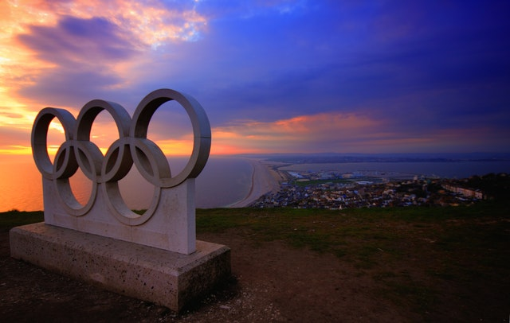

THE SPECIAL OLYMPICS
There are many stereotypes that are rampant in society concerning individuals that have special needs that can hinder their desire to be outgoing and to try new things. This site is here to provide helpful information about opportunities for everyone to learn about what the Special Olympics are, when they started and how anyone can sign up to participate as an athlete, as a volunteer, or as a coach for the many events involved.

The Special Olympics provides year-round sports training and athletic competition in a variety of Olympic-type sports for children and adults with intellectual disabilities, giving them continuing opportunities to develop physical fitness, demonstrate courage, experience joy and participate in a sharing of gifts, skills and friendship with their families, other Special Olympics athletes and the community.

Special Olympics supports over 5 million athletes, 1 million coaches and volunteers, more than 100,000 competitions each year, and 32 Olympic-type sports through programs in more than 170 countries. The sports range widely from alpine skiing and badminton to power lifting and volleyball!